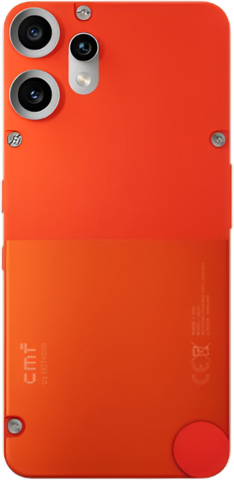

1

CMF Phone 1
The CMF Phone 1 is Nothing's budget phone, known for its unique, customizable design with swappable back covers. Key specs include a Dimensity 7300 5G chip, a 6.67" 120Hz AMOLED screen, a 50MP main camera, and a 5,000mAh battery.
2
CMF Phone 2 Pro
The CMF Phone 2 Pro is a stylish and capable budget phone from Nothing, featuring a 6.77-inch 120Hz AMOLED display and the MediaTek Dimensity 7300 Pro 5G chipset. It boasts a notable 50MP triple-camera setup, including a 2x telephoto lens, and is powered by a 5,000 mAh battery running on the minimalist Nothing OS 3.2.